プログラミングで何ができるのか、プログラミングで行われる一連の作業はどうしてこのようになっているのかを紐解く事で、プログラムに対する理解力は確実に上がります。
それはコンピュータやパソコンのメカニズムを知る事にもなり、はたまた機械仕掛けのロジックに親近性をもたらすと思います。
ようはもっとプログラムとコンピュータの関係性に気付けるようになるはずです。
今回はコンピュータの歴史を辿っていきながら、プログラム言語がどういった形で変わってきたのかを追っていきましょう。
プログラムの歴史はコンピュータ史
パソコンが現代で当たり前に存在するずっと前、トーマス・エジソンが電球を作る以前の事です。
ジェロラモ・カルダーノが電磁と電気を区別して、ニコラ・テスラが交流発電機を発明した歴史にもあるように、最初は科学の分野でしか電気を使う事はありませんでした。
世界で最初に電卓の元になる計算機「アリスモメーター」が作られたのが今から100年以上前の話になります。
コンピュータは色んな分野の技術を応用して作られる事になります。
| 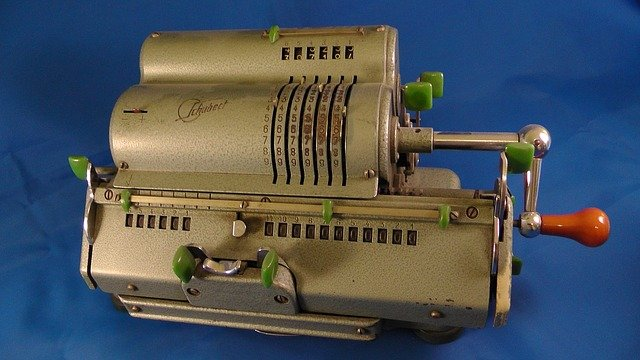 |
世界で初めて実用化されたとされるヴィンテージ計算機 |
コンピュータは基本的に「計算機」(Calculator)です。
日本では1902年、「自動算盤」というメカニック計算機が矢頭良一氏によって作成されました。
コンピュータは初期の頃、機械仕掛けの計算マシンと電力で動くモーターが出現した後に実現可能になりました。
その後パンチカードという特定の数字に対応するエリアに穴を開けて数字を表現する技術が生み出されます。
初期のコンピュータはこのパンチカードシステムを使ったアウトプットイメージを利用したものが主流でした。時はまだ19世紀でした。
世界初のプログラミングが可能なコンピュータはドイツの発明家ツーゼが自ら製作した「Z1」という機械とされます。1938年に完成。
これは2進数によりコンピュータが動作する現代のコンピュータの原型とも言える最初の発明でした。しかしこのコンピュータはその後の世界大戦で消失したそうです。
| 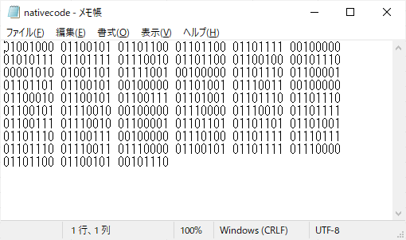 |
バイナリデータ (2進数) |
しかし「Z1」は2進数でのみ構成され、実質その状況下でプログラミングを行うのは至難の業だったでしょう。当時としてはそれしか無かったのですが。
そこで2進数の特定の羅列を組み合わせて演算機能やレジスタ(※)代入などを行えるように命令を定義してはどうか？という発想で生み出されたのが「アセンブリ言語」というプログラム言語です。
レジスタとは？ |
|
|
レジスタはCPU(もといマイクロプロセッサー)の内部に存在する記憶領域の名前です。 |
プログラミング言語の誕生
コンピュータとして初めてプログラム言語が定着したのは1948年に開発された「The Baby」というコンピュータです。
その翌年(1949年)に「EDSAC」というコンピュータが誕生、このEDSACは大量の真空管で構成され本体は12畳の部屋くらいの大きさがあり、搭載していたメモリの容量は2キロバイトほどしかありませんでした。
2キロバイトは現在のパソコンで日本語などの全角文字を1000文字ほど使えるサイズです。とても少ないですね。
プログラミングの仕組みにはプログラム言語から機械語に翻訳する作業があるのですが、この作業を行うベーシックプログラムがEDSACに搭載されていました(イニシャルオーダーと呼ばれていたそうです)。
これがアセンブラの元になったと言われています。
| 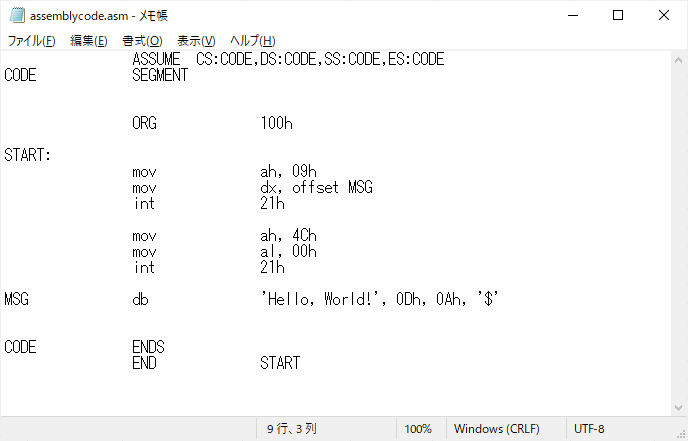 |
アセンブリ言語 (ニーモニック) |
アセンブラ(アセンブリ言語を機械語に翻訳するプログラム)は機械語によるプログラミングをより効率よく行うために生み出されました。
メモリとレジスタとのデータのやり取りを行うための専用の命令を単語で指定できるようになっています(movとかintとか)。0とか1とかの羅列で指定するより圧倒的に分かりやすいですよね。
しかしどうでしょうか？我々が見たところで何をやっているかはちんぷんかんぷんの人がほとんどのはずです。この段階ではまだ一部の専門家だけが扱う技術と言った感じでしょうか。
しかしこのプログラム言語の登場は当時革新的でした。いわゆるプログラミングするために人間が理解できる言語を生み出す可能性を与えたのです。
また「ノイマン型」と呼ばれるコンピュータが発明され、「EDSAC」や「EDVAC」などがその黎明期に台頭しました。
ノイマン型コンピュータとは、ソフトウェアという概念を取り入れ、予めメインメモリにプログラムを突っ込んでおき、それを順番に実行するような仕組みを取っているものです。
これは現在のWindowsパソコンなどもこの形式です。ソフトウェアはメモリ領域に読み込んで実行します。これはノイマン型コンピュータです。
こうしてプログラムによってソフトウェアを構築する形態が生まれました。
| 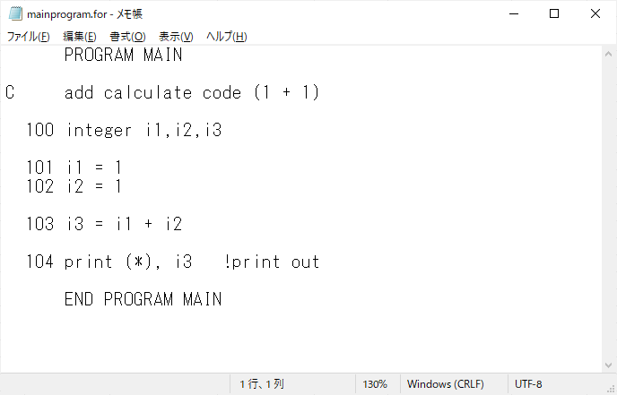 |
FORTRAN77 |
1956年に「FORTRAN」(フォートラン)というプログラム言語が誕生します。ちょっとだけモダンな雰囲気になりましたね^^
ちなみにFORTRANが出た当時はもっと分かりづらい構文だったそうですが、改良が加えられていき今でも実際に使われている機関があります。
FORTRANは世界で初めて生まれた高水準言語(※)です。この言語が登場した事によりプログラム言語は実行するプログラムだけでなく、構造化プログラミングとしての道を辿る事になります。
高水準言語って何ですか？ |
|
|
高水準というのは、より人間が理解できる高い水準の事を意味します。 |
また1958年に現代のコンピュータの基盤となる「集積回路」が発明されます。これは驚くべき事にコンデンサや抵抗などの部品の元となる素子を混ぜ合わせて作られた全く別のパーツでした。
この集積回路の登場により、コンピュータ産業が一気に加速していきます。
それはこれまで専門家が使うのみだったコンピュータが、大衆に広く受け入れられていく未来が始まった瞬間でした。
| 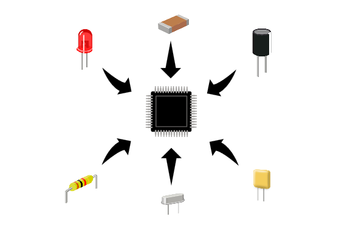 |
集積回路(Integrated Circuit) |
またもう一つ大きな出来事があったのが1960年代。(この辺は分からない単語がたくさん出てくるので無理をせずにGoogle検索を使いましょう)
初めて世界でオペレーティングシステム(OS)として呼ばれたと言われる「OS/360」が出てきました。このOSはNASA(アメリカ航空宇宙局)が使っていました。
このOSは世界で初めて複数のプログラムを同時に稼働させるマルチタスクを実現します。この技術はIBM社が作りました。
またこのOSが搭載されていたIBM社のコンピュータ「System/360」はコンピュータの機種が変更になってもプログラムが互換的に使用できる仕組み(※)になっていました。この仕組みで成功したのはIBM社が初めてです。
更にハードディスクの元祖のようなディスクドライブと接続を可能にし、プログラムデータの長期保存ができました。そしてこれらハードディスクもフロッピーディスクもIBM社が作りました。
更に更に、現代のプログラムでもその存在を垣間見る事ができる「8ビットが1バイトである」という定義もIBM社が作りました。
現代に存在するパソコンの源流に位置する大半の概念はIBM社によって拵えられました。まさにコンピュータ界の重鎮ならぬ、パーフェクト超人的な存在だったのです。
互換的に使用できる仕組みとはどういう事ですか？ |
|
|
互換性があるかどうかの事です。「A」と「B」どちらでも対応できるよ、という状態。 |
構造化プログラミングの登場
| 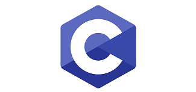 |
1960年～1970年代には数多くのプログラム言語が誕生し、現代で最も有名であろうプログラム言語の「C」もここで誕生しました。
C言語の登場で構造化プログラミングが一気に浸透する事になります。C言語を開発したデニス・リッチーという人は、かの有名なOSである「UNIX」を作った人です。
UNIX？ |
|
|
これはユニックスと言います。UNIXはオペレーティングシステム(OS)の一つです。 OS（オペレーティングシステム / 基本ソフト）とは - IT用語辞典 e-Words（別ウインドウで開きます） またOSについては、当ウェブサイトでも少し先の記事で紹介する予定です。 先の記事：22. オペレーティングシステム(OS) (作成中) |
C言語が登場した背景には「ソフトウェア危機」という時代背景がありました。
この問題は結局のところ需要と供給がアンバランスとなり、開発が間に合わなかったり仕様の調整などがうまくいかず信用問題などを引き起こす事が懸念された事でした。
それだけソフトウェア開発に対する期待は当時から相当なものであり、まだ発展途上だったコンピュータ業界にとって大きな問題でした。
プログラミング言語の発展はこの問題に対処するもので、工数削減や構造の簡易化により専門家を増やすといった試みがあったのではないでしょうか。
プログラミング言語の「BASIC」や「COBOL」と言った言語はこういった経緯で生み出されてきたものであると考えられます。
| 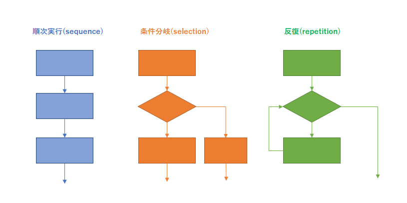 |
構造化プログラミングで難解コードから脱却 |
構造化プログラミングとは、具体的にはジャンプ命令などの多用によるスパゲティコードの氾濫による問題を解決するために制御構造の思想を追加したものです。
これは具体的に「順次実行」(sequence)、「条件分岐」(selection)、「反復」(repetition)の事でこの思想は現代のプログラミングにおいても基本的な思考概念として根強いです。
これらを使う事によってこれまで問題となっていた「ソフトウェア危機」に対応しようとしました。
構造化プログラミングの登場により、プログラミングはより人間に近しい応用技術分野へ進出する事となります。
この頃からMPU(マイクロプロセッサ)の高性能化やメモリの大容量化が始まった事もあって、より一層プログラムコードのデザインや再利用性を重視するようになっていきました。
70年代より前は、プログラミングコードの可読性より容量の節約や前述の問題もあり、開発理論を重視できなかった時代背景もありました。
C言語などで代表的な先進技術の一つとして「ファイル分割」があります。
これはプログラムのひと塊を「モジュール」として定義する事で、プログラムの仕様変更や改訂に対して軽微な対応で済ませる事ができる考えです。
この思想も応用ですね。
プログラム言語の進化はプログラム自体のコード体系の利便性から、システム全体としての保守性に変わっていきました。
| 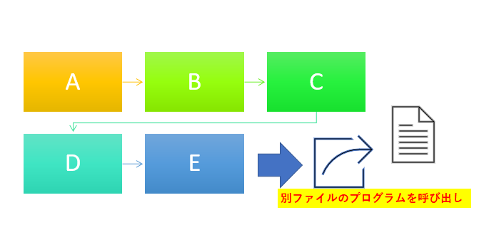 |
ファイル分割やポインタ変数などの技術も構造化プログラミングで生まれた思想 |
1975年にパーソナルコンピューターという名目で「ALTAIR」が販売開始、その後アップル社のパソコン「APPLE-Ⅰ」が登場しました。
またアイコンをクリックしてプログラムが実行される「GUI」という形式を初めて採用した「Macintosh」(マッキントッシュ。愛称はマック)が発売されます。
これまで文字だけの制御でしかコンピュータを動かせなかったコンピュータ界に更なる激震が走りました。
| 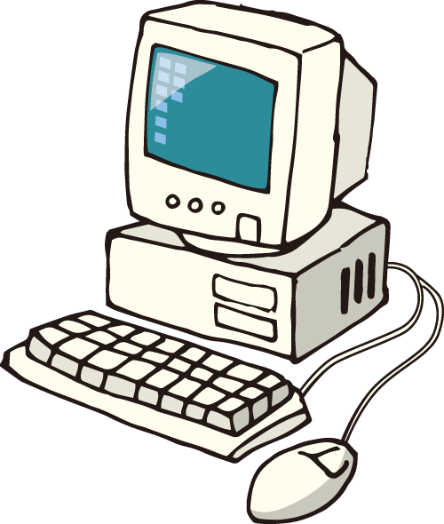 |
個人がコンピュータを所有できるのは当時まさに夢のようでした |
またインテルのCPU(当時はMPU)やアップル、NEC、コモドールなどの会社が挙ってコンピュータ業界へ進出したのもこの頃です。
次第に専門家だけでなく、大衆に受け入れられる市場へ参入するという一連の流れは、時代がコンピュータに依存し始めていた証拠でもありました。
その後も8bitのマイクロプロセッサ「Z-80」やインテル社やモトローラ社が16bitのマイクロプロセッサを販売するなど、パソコン普及の動きが加速していきます。
また70年代後半になるとゲームセンターなどで稼働していたアーケードゲームが人気を博し、やがて家庭用ゲーム機という形でエンターテインメントのコンピュータも登場しました。
中でも「ファミリーコンピュータ」というゲーム機は超絶的な大ヒットで6000万台以上売りさばかれたそうです。
NEC社や富士通のパソコンではゲームソフトウェアも販売を行うなど、パソコンはゲーム業界でも一世を風靡しました。
「GUI」と「CUI」について |
|||||
|
これは説明するより見てもらったほうが早いと思いますので、以下をご覧ください。
|
オブジェクト指向プログラミングの登場
1995年にマイクロソフト社が「Windows 95」を発売しました。
これは社会現象にまでなり、この時に世間でインターネットブームが巻き起こります。もしかすると知っている方もいらっしゃるかも・・・？
ここでいきなりマイクロソフトが出てきましたが、マイクロソフトは80年代から「MS-DOS」というオペレーティングシステムを開発し、IBMのパソコンに入れて販売していました。
これが大ヒットして、マイクロソフトの名が急速に知れ渡ったと言われています。
90年代当時普及していたパソコンでは、ワードプロセッサーやオフィスコンピューターなどがありましたが、Windowsのパソコンが普及し始めるとそれらは次第にその影を薄くしていきます。
| 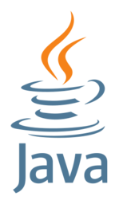 |
時を同じくしてプログラミング言語「Java」がリリースされます。
この言語はCの拡張言語である「C++」に似た性質を持っており、「オブジェクト指向プログラミング」の概念を世間に定着させた言語です。
(実際にはオブジェクト指向として最初に話題になったのは「Smalltalk」という言語でしたが、Javaはサーバアプリ開発などで注目されたため広範囲にオブジェクト指向が再認識されました)
オブジェクト指向プログラミングとは、変数(※)や関数をグループとして管理しようとする概念を含んだプログラミングパラダイムです。
ちょっと抽象的ですが、オブジェクト(物質)としてグループを作り、そのオブジェクトを作るために必要なデータをそのグループ内に定義してやる事で「グローバル変数」などの問題を解消できる仕組みが備わっているものです。
このオブジェクト指向の考え方は現代のプログラミングでも度々有効利用されているものであり、現時点(2022年)で最もモダンなプログラミング思想となっています。
「Ruby」や「C#」、「PHP」、「Swift」、「Python」なども全部オブジェクト指向言語になります。
変数とは何ですか？ |
|
|
変数はデータを保管するための ものの事です。 |
Javaはこれまでのプログラム言語になかった概念をたくさん持っていて、中でも「クラス」という概念が特徴的です。
クラスとは複数の変数やサブルーチンがひとまとまりになったグループの事です。このグループをオブジェクトとして扱い、様々な「物質」として取り扱っていくのがJavaの特徴です。
「物質」というのは例えば「肉」であったり「魚」であったり、「家」であったり「町」であったりするものです。それは大なり小なり様々です。
これはちょっと理解するのが難しいかもしれません。
オブジェクト指向プログラミングというのは、「もの」として定義できる一塊のグループ単位にシステムを構築するというものです。
| 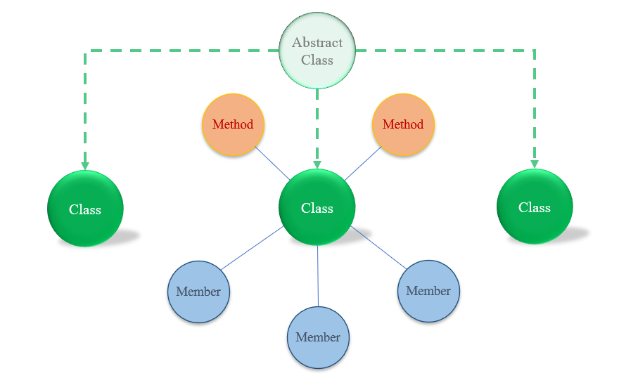 |
「・・・？？？」となっている方、多いと思います。すいません^^;
オブジェクト指向は一言で説明できるような単純なプログラミング手法ではないのです。
むしろ簡単に説明したくないですし、あらゆる問題を解決できるもので、非常に奥が深いです。
この件についてはこのウェブサイトの終盤のほうのセクションで解説していますので、よろしければそちらをご覧ください。
先の記事：24. オブジェクト指向プログラミング (作成中)
現代のプログラム言語
21世紀に入るとコンピュータの大容量化や「Git」に代表されるバージョン管理ソフトウェアなどが登場した事で、
プログラム言語から選択するのではなく、ハードウェアや実装したい環境から言語が選択されるようになります。
これは逆にGUI環境やWebサーバーなどが様々な開発言語に対応する流れを後押ししました。
開発者、デベロッパーは環境に合った言語、自分のなじみ深いコードを使って最適な工数で開発作業に取り組めるようになりました。
C言語では構造化プログラミングのパラダイムが話題となり、それまで問題だった「goto文」が横行していた業界に最適化のメスを入れる形となりました。
その後C言語は「C++」「Objective-C」と変遷していきます。
C++は世界初のオブジェクト指向パラダイムと言われる「Simula67」の概念を取り入れたものだったそうで、その後様々な仕様改定が行われます。
マイクロソフトのWindowsからはGUIアプリ開発専用言語として「Visual Basic」「C#」「F#」などが開発されます。
これは「.NET Framework」と呼ばれるWindowsの開発エンジンのシェアを伸ばすものとなりました。
.NET FrameworkはWindowsのアプリケーションだけではなく、Webアプリの開発などもできます。
今の時代では当たり前となったAmazonやYahoo!ショッピング、楽天市場などはWebアプリケーションです。
これは「ECサイト」とも呼ばれます(EC = Electronic Commerce(電子商取引))。
「Google」のような様々な情報を検索するようなサービスや、「Twitter」などのように情報共有(シェアリング)に重点を置いたサービスなど、色々な要素を含めたオンラインサービスが登場しました。
ウェブサービス、ウェブサーバのアプリケーションなどもプログラム言語で作られています。これは「PHP」や「Ruby」などが用いられ、データベースシステムなどを使用して構築されるのが一般的です。
データベースというのは、いわゆるデータを管理するためのデータセンターみたいなもので、「データベース管理システム」と呼ばれるものです。関連用語で「SQL」などが有名ですかね。
会員情報などの大量の情報をデータベースで管理します。
こういった形で近年では、色んな言語や環境、ネットワーク、フレームワークなどを活用してシステムとして作られているのが特徴です。
これらの基底にはプログラミングの技術がありますが、そのプログラミングもツールなどが使われていたりしたりしていて、純粋なプログラミングをしなくてもれっきとしたシステムを作っているケースも多くみられるようになりました。
近年では、機械学習技術を使ったAI(人工知能)の開発や、Scratchと呼ばれる教育現場で使用されるプログラミング学習ツールなどが人気になったりしており、
これまでITの世界とは全く無縁だった人たちも積極的にコンピュータの開発サイドに参加する流れになりつつあります。
次の記事はどのプログラミング言語でも共通する要素である「変数」について触れていこうと思います。
コンピュータとプログラムの関係性を知ったらいよいよ実際にコンピュータとの対話を始めていきましょう。
コラム：プログラミングの発展について |
|
|
「BASIC」や「C」などの高水準言語が登場した事により、エンジニアや研究者たちは次第にプログラミング言語自体の体裁を意識するようになりました。 |